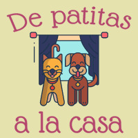

Inicio
Adopciones
Nosotros
Contacto
Aportes
Ellos estan buscando un hogar
Branco
Edad: 9 meses
Ubicacion: Villa Maria, Cordoba
Matilde
Edad: 3 años
Ubicacion: Mataderos, CABA
Hachi
Edad: 6 años
Ubicacion: Belgrano, CABA
Huesos
Edad: 2 años
Ubicacion: Luis Guillon, Buenos Aires
Pulga
Edad: 9 años
Ubicacion: Laferrere, Buenos Aires
Panchito
Edad: 5 meses
Ubicacion:Merlo, San Luis
Panchito Edad: 5 meses Ubicacion: Merlo, San Luis
Garfield
Edad: 1 mes
Ubicacion: Resistencia, Chaco
Quina
Edad: 2 meses
Ubicacion: Lanus, Buenos Aires
Duka
Edad: 1 año
Ubicacion: Tapiales, Buenos Aires
Noah
Edad: 6 años
Ubicacion: Mataderos, CABA
Homero
Edad: 4 años
Ubicacion: Tortuguitas, Buenos Aires
Matute
Edad: 7 años
Ubicacion: Barracas, CABA
Juanita
Edad: 3 años
Ubicacion: Malvinas Argentinas, Buenos Aires
Spiderman
Edad: 10 años
Ubicacion: Pilar, Buenos Aires
Bola de nieve
Edad: 1 año
Ubicacion: El Calafate, Santa Cruz